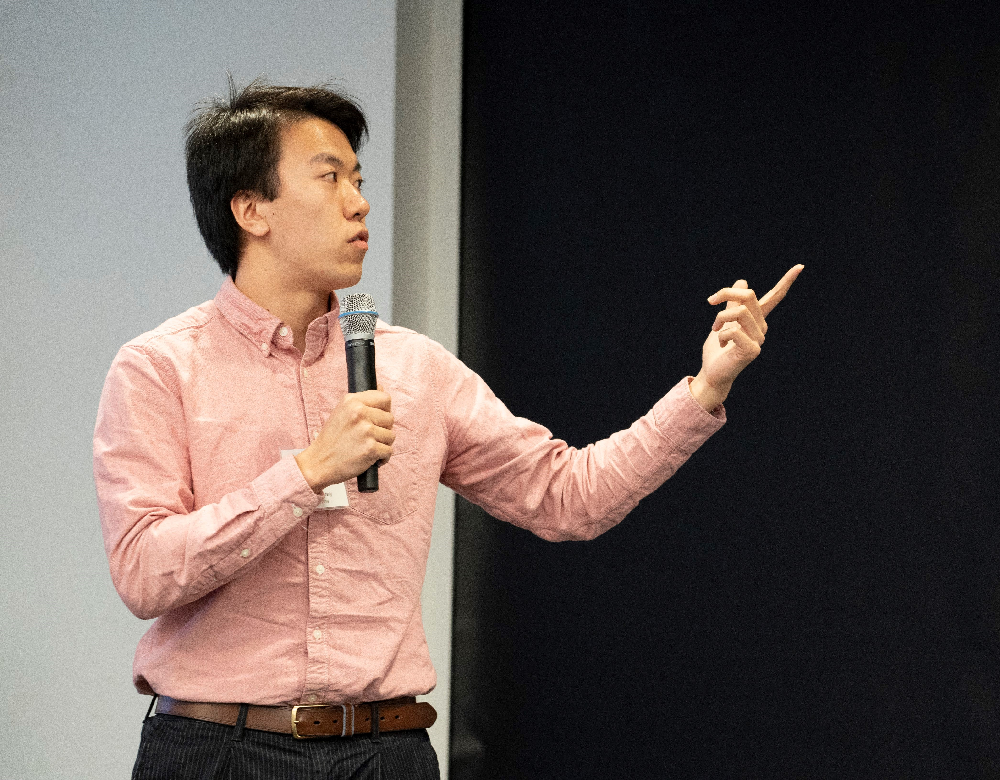

MS student at Columbia University
New York, NY
Education
Columbia University
Sep 2018 – Dec 2019 (Expected)
M.S. in Electrical Engineering
GPA 4.00/4.00
The Hong Kong Polytechnic University
June 2018
B.Eng (Hons) in Electronic & Information Engineering
GPA 3.76/4.00
Skills
Internet of Things
80%
Embedded System Design
70%
Amazon Web Services
65%
Linux
50%
Languages
Python
C/C++
SystemVerilog